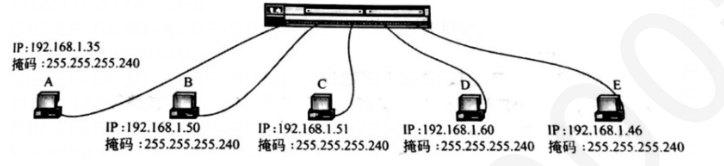

第 31 题
下列IP 地址中，哪一个作为目的IP 地址可以被互联网上的路由器转发？
- A．10.0.0.1
- B．39.156.66.10
- C．192.168.255.253
- D．255.255.255.255
答案与解析
答案：B
互联网上的路由器只会转发目的地址为公有IP 地址的数据包，对于特殊用途的IP地址（如私有IP地址、广播地址等）则通常不予转发。私有IP地址的范围为10.0.0.0- 10.255.255.255、172.16.0.0-172.31.255.255、192.168.0.0-192.168.255.255，选项中A 和D 均属于私有IP地址，因此不会被路由器转发。选项D 是受限广播地址。发往此地址的数据包用于在发送方所在的本地网络（广播域）内进行广播。路由器的一个基本功能就是隔离广播域，因此不会转发目的地址为255.255.255.255 的数据包，以防止广播风暴。
第 32 题
下列IPv4 地址中，可以配置给主机使用的是（ ）
- A．0.0.0.0
- B．255.255.255.255
- C．127.0.0.1
- D．192.168.0.1
答案与解析
答案：D
如下表所示
第 33 题
某网络的IP 地址空间为192.168.5.0/24，采用定长子网划分，且要求每个子网至少能容纳5 台主机。若要划分出尽可能多的子网，应采用的子网掩码是（）。
- A．255.255.255.252
- B．255.255.255.248
- C．255.255.255.240
- D．255.255.255.224
答案与解析
答案：B
每个子网至少容纳5 台主机，再加上网络号和广播地址，即每个子网至少需要7个IP地址，因此主机位设置为3 ，网络前缀长度为29 ，对应的点分十进制子网掩码为255.255.255.248。
第 34 题
某网络的IP 地址空间为192.168.5.0/24，采用变长子网掩码（VLSM）来划分子网以满足不同部门的需求：部门A 需要50 台主机，部门B 需要20 台主机，部门C 需要10 台主机。如果按照所需IP地址数从大到小的顺序分配地址空间，则分配给部门B 的子网的网络地址可能是（ ）。
- A．192.168.5.0
- B．192.168.5.64
- C．192.168.5.96
- D．192.168.5.128
答案与解析
答案：B
部门A 需要50 台主机，加上子网号和广播地址，共需要52 个IP 地址，主机号为6 位。同理，部门B 需要22 个IP 地址，主机号为5，部门C 需要12 个IP 地址，主机号为4。首先给部门A分配地址空间，从192.168.5.0开始，分配192.168.5.0/26。该块占用了192.168.5.0到192.168.5.63的地址。然后给部门B分配地址空间，下一个可用的起始地址是192.168.5.64。分配192.168.5.64/27 给部门B。该块占用了192.168.5.64 到192.168.5.95 的地址。因此，分配给部门B 的子网网络地址是192.168.5.64。
第 35 题
下图是一个利用以太网交换机连接而成的局域网，如果它们都运行TCP/IP 协议，而且网络管理员为它们分配的IP 地址和子网掩码如图所示，（ ）计算机之间不能直接访问。

- A．A 和E
- B．B 和C
- C．C 和D
- D．D 和E
答案与解析
答案：D
各台计算机的子网掩码均为255.255.255.240，其二进制形式（只显示最后一个字节）为255.255.255.11110000，将图中的各计算机的IP 地址与子网掩码进行“与”操作，可得到各计算机所在的子网地址：计算机A与E的子网地址为192.168.1.32，而计算机B、C、D的子网地址为192.168.1.48。如果这些计算机采用Ethernet 交换机进行连接，那么，计算机A与E 之间可以直接访问，而计算机B、C、D 之间可以直接访问。
第 36 题
某网络的IP地址空间为192.168.12.0/24，采用定长子网划分和静态路由，子网掩码为255.255.255.248。一位网络管理员仅为两台主机H1 和H2 进行静态IP 配置。H1 被配置为192.168.12.1， H2 被配置为192.168.12.6。此时，关于这两台主机通信能力的说法，正确的是（ ）。
- A．H1 和H2 可以正常通信，因为它们位于同一个子网。
- B．H1 和H2 无法直接通信，因为它们位于不同的子网。
- C．H1 和H2 无法正常通信，因为仅配置了H1 和H2 的IP 地址，未对路由器进行配置。
- D．H1 可以单向向H2 发送数据，但H2 无法回复。
答案与解析
答案：A
H1 的IP 地址为192.168.12.1，H2 的IP 地址为192.16.12.6，它们的IP 地址分别与子网掩码进行按位与运算，如果得到的结果均为192.168.12.0（即网络号），因此可以判断它们在同一个子网。在同一个子网（或广播域）内的主机之间进行通信，属于本地通信，不经过路由器。因此H1 和H2 可以正常通信。
第 37 题
某主机的IP 地址为192.168.96.125/18，若该主机向其所在子网发送广播分组，则目的地址为 （）。
- A．192.168.63.0
- B．192.168.96.0
- C．192.168.96.255
- D．192.168.127.255
答案与解析
答案：D
IP 地址为192.168.96.125，子网掩码为/18，即255.255.192.0。将IP 地址和子网掩码转换为二进制进行按位与运算，得到网络号192.168.64.0。广播地址是将网络地址中的主机位全部置为1。/18 表示网络位为18 位，主机位为32 - 18 = 14 位。网络地址192.168.01000000.0 的主机位是后14 位。将这14 位全置为1，得到192.168.01111111.11111111，转换为十进制即192.168.127.255，故D正确。
第 38 题
一个子网的网络地址为192.168.32.0，子网掩码为255.255.255.128。则该子网内第一个可分配给主机的IP 地址和可容纳的最大主机数分别是（ ）。
- A．192.168.32.0, 126
- B．192.168.32.0, 128
- C．192.168.32.1, 126
- D．192.168.32.1, 128
答案与解析
答案：C
子网掩码为255.255.255.128，则其网络前缀长度为25 位，主机号为7 位，总IP地址数为个。去除主机号全0 和全1 两种特殊情况，可分配给主机的IP 地址共126 个，因此可容纳的最大主机数为126。网络地址和子网掩码按位与运算得到网络地址为192.168.32.0，第一个可分配给主机的IP 地址是网络地址加1，因此第一个可分配的主机IP 地址是192.168.32.1。
第 39 题
某网络中一台主机的IP 地址是183.80.72.48，其所在网络的网络地址是183.80.64.0，则当该网络可容纳主机数最小时，采用的子网掩码为（）。
- A．255.255.128.0
- B．255.255.224.0
- C．255.255.240.0
- D．255.255.192.0
答案与解析
答案：C
将一台主机的IP 地址与其子网掩码进行按位与运算，得到的结果就是该主机所在网络的网络地址。已知主机IP 地址和网络地址，只需要从头开始一一对比，找出两个地址的最大相同前缀长度即可，为/20，选择C。
第 40 题
在子网192.168.4.0/29 中，能接收目的地址为192.168.4.7 的IP 分组的最大主机数是（ ）。
- A．0
- B．1
- C．6
- D．8
答案与解析
答案：C
该子网的子网掩码为29，则网络号29 位，主机号为3 位。共有8 个IP 地址，除去用于表示网络号的全0 和用于表示广播地址的全1，剩余6 个IP 地址可以被分配给主机。
第 41 题
在以下四个地址块中，与地址块192.168.16.192/26 不重叠，且聚合后不会引入多余地址的是（ ）
- A．192.168.16.0/25
- B．192.168.16.0/26
- C．192.168.16.128/26
- D．192.168.16.192/27
答案与解析
答案：C
本题考查两个知识点：通过给定CIDR 地址块，找出该地址块的全部细节(最小地址，最大地址，地址数量，地址掩码)地址块聚合方法(找共同前缀)。192.168.16.192/26 与选项A 的地址块聚合后的地址块为192.168.16.0/24，会引入多余地址。192.168.16.192/26 与选项B 的地址块聚合后的地址块为192.168.16.0/24，会引入多余地址。192.168.16.192/26与选项D的地址块有部分重叠。 192.168.16.192/26 与选项C 的地址块聚合后的地址块为192.168.16.128/25，聚合地址块不会引入多余地址。
第 42 题
ARP 协议中ARP 请求报文和ARP 响应报文分别采用（ ）。
- A．单播，单播
- B．单播，广播
- C．广播，单播
- D．广播，广播
答案与解析
答案：C
当一台主机需要解析目标IP 地址对应的MAC 地址时，它会发送一个ARP 请求报文。由于此时发送方不知道目标MAC 地址，ARP 请求报文需要在本地网络中被所有主机接收到，以便拥有该IP 地址的主机能够响应。因此，ARP 请求报文在数据链路层（如以太网）是以广播方式发送的。其封装的以太网帧的目标MAC 地址是广播地址FF:FF:FF:FF:FF:FF。当网络中的某台主机（或路由器接口）确认ARP 请求中的目标IP地址是自己的IP 地址时，它会发送一个ARP 响应报文给请求方。这个响应报文包含了该主机的MAC 地址。由于请求方（发送ARP 请求的主机）的MAC 地址在ARP 请求报文中是已知的（作为发送方MAC 地址），因此ARP 响应报文可以直接发送给请求方，采用单播方式。其封装的以太网帧的目标MAC 地址是ARP 请求报文中的源MAC 地址。
第 43 题
主机H1 的IP 地址为192.168.1.10/24，其配置的默认网关为192.168.1.1。现主机H1 希望向另一台主机H2（IP 地址为192.168.2.20/24）发送IP 数据包。假设主机H1 的ARP 缓存为空。在此通信场景下，主机H1 首先会发送ARP 请求的目标IP 地址是（ ）。
- A．192.168.1.1
- B．192.168.2.20
- C．192.168.1.255
- D．255.255.255.255
答案与解析
答案：A
首先，主机H1 需要判断目的主机H2 的IP 地址192.168.2.20 是否与自己在同一子网。H1 的IP 地址是192.168.1.10/24，其网络号是192.168.1.0，而H2 的IP 是192.168.2.20/24，其网络号是192.168.2.0。由于网络号不同，主机H1 判定主机H2 位于不同的子网。当要向不同子网的主机发送数据时，主机H1 必须将数据包发送给其配置的默认网关（路由器）。因此，主机H1 需要获取默认网关192.168.1.1 的MAC 地址，以便将IP 数据包封装成数据链路层帧发送给网关。如果H1 的ARP缓存中没有默认网关的MAC 地址条目，它会发送一个ARP 请求，该请求的目标IP 地址是默认网关的IP 地址，即192.168.1.1。
第 44 题
在一个局域网中，主机A 发送一个ARP 请求以查询主机B 的MAC 地址。当该ARP 请求帧到达交换机时，交换机通常会如何处理？
- A．仅将该帧转发给连接主机B 的那个端口。
- B．丢弃该帧。
- C．向除接收端口外的所有其他端口转发该帧。
- D．查询自身的ARP 缓存表，若有对应条目则直接代答。
答案与解析
答案：C
ARP报文被直接封装在数据链路层帧中，其中ARP请求报文采用广播，目的MAC 地址为FF-FF-FF-FF-FF-FF，交换机会根据ARP 报文的目的MAC 地址将其向除了接收端口外的所有其他端口转发。
第 45 题
下列关于ARP 协议的说法中，正确的是（ ）。
- A．ARP 请求和ARP 响应报文均封装在IP 数据报中，由IP 协议负责其传输。
- B．为防止ARP 欺骗，ARP 协议自身设计了严格的安全验证机制来确认应答的合法性。
- C．目标主机收到ARP 请求报文后，仅发送ARP 响应报文而不做其他操作。
- D．ARP 协议除了ARP 请求报文和响应报文外，还有其他类型的报文。
答案与解析
答案：D
ARP 报文是直接封装在数据链路层帧（例如以太网帧）中的，其在以太网帧中的类型字段值为0x0806。IP 协议依赖ARP 来解析MAC 地址，而不是ARP 依赖IP 协议进行传输，故A错误。ARP 协议最初设计时并未考虑复杂的安全问题，因此它本身缺乏有效的身份验证机制。这使得ARP 欺骗等攻击成为可能，故B 错误。当目标主机收到针对其IP 地址的ARP 请求报文后，它会执行以下两个操作：1、更新自身的ARP缓存：它会从收到的ARP请求报文中提取发送方的IP地址和MAC 地址，并用这个映射关系更新或创建自己的ARP 缓存条目。这样做是为了方便后续向请求方发送数据。2、发送ARP 响应报文：向请求方单播一个ARP 响应报文，其中包含自己的IP 地址和MAC 地址。所以，除了发送ARP 响应，还会更新ARP 缓存，故C 错误。ARP 协议除了ARP 请求报文和响应报文外，还有其他类型的报文，例如用于检测IP 地址冲突的“无故ARP”，故D 正确。
第 46 题
以下选项中不属于ICMP 报文的是（ ）
- A．时间戳请求和回答报文
- B．源站抑制报文
- C．流量调整报文、
- D．回送请求/应答报文
答案与解析
答案：C
由于IP 协议提供的是一种不可靠、无连接、“尽力而为”的服务，不能提供差错控制与查询等机制。在TCP／IP 协议中，差错报告、查询与控制功能由ICMP 协议完成。ICMP 协议定义了两种类型的报文：差错报告报文与查询报文。其中，差错报告报文又可分为5 类：目的站不可到达、源站抑制、超时、参数问题和改变路由。查询报文又可分为4 类：回送请求／应答、时间截请求／ 应答、地址掩码请求／应答、路由器询问／通告。流量调整报文不属于ICMP 的报文。
第 47 题
若路由器R 因为拥塞丢弃IP 分组，则此时R 可以向发出该IP 分组的源主机发送的ICMP 报文件类型是（）
- A．目的不可达
- B．参数不正确
- C．路由重定向
- D．源点抑制
答案与解析
答案：D
当路由器和主机由于拥塞而丢弃数据报时，就向源点发送源点抑制报文，是源点知道应当把数据报的发送速率放慢。
第 48 题
IP 分组经过路由转发时，如果不被分片，则（ ）。
- A．TTL 字段和校验和字段都会改变。
- B．TTL 字段和IP 地址字段会改变。
- C．IP 地址字段和校验和字段都会改变。
- D．DF 和MF 字段都会改变。
答案与解析
答案：A
每经过一个路由器，TTL 值都会减一，TTL 字段一定会改变;校验和是通过对首部数据计算得到，每经过一跳路由器首部都可能发生变化，都会重新计算校验和，故校验和字段一定会改变;不考虑NAT 时，在整个传输过程中源P 地址和目的IP 地址都不变;由于分组不被分片，故DF 和MF 字段不会改变。故选择A 选项。
第 49 题
当一个长度为3000 字节的TCP 报文段需要从源主机发送到目的主机时，假设源主机和目的主机之间的路径上的MTU 为1400 字节，假设在网络传输过程中不发生丢包、重传等问题，下面说法正确的是（）。
- A．为了将TCP 报文段正确传输到目的主机，源主机需要分为3 个IP 数据报，且IP 数据报的总长度分别为1400，1400 和260
- B．第3 个分片的MF 标志位为0，DF 标志位为1
- C．如果第1 个分片的标识位是12345，则第2 个分片的标识位是12346，第3 个分片的标识位是12347
- D．在收到最后一个IP 数据报之后，目的主机需要查看每个数据报的标识位，将数据报的数据字段按照顺序依次组装成一个完整的TCP 报文段
答案与解析
答案：D
A 选项错误。TCP 报文段总长度为3000B，则传递给网络层的数据报的数据部分长度为3000B。MTU 为1400 包括20 的首部和1380 的数据部分，但是这里注意，分片长度要是8 的整数倍，1380 并不是8 的整数倍要找到距离1380 最近且是8 的整数倍的数字，则是1376，分片的最大数据部分应该是1376。数据报的数据部分是3000，因此可以分成1376、1376、248 这3 个分片。由于题目问的是总长度，还需要加上20 的首部，因此3 个分片的总长度分别为1396，1396 和268。 B选项错误。MF表示的是后面是否还有分片，对于第3个分片来说，后面没有分片，因此MF=0，DF 表示是否允许分片，由于此网络已经对IP 数据报进行了分片，所以肯定是允许分片，DF-0表示允许分片。 C 选项错误。IP 数据报的标识字段用于标识属于同一个数据报的分片，因此应该设置为同一个值，以便目的主机将多个分片组装成原始的TCP 报文段。 D 选项正确。在收到最后一个IP数据报之后，目的主机需要査看每个P数据报的MF标志位，将数据报的TCP数据字段按照顺序依次组装成一个完整的TCP 报文段。在本题中，由于MF标志位的设置，目的主机需要将前两个I数据报的TCP数据字段拼接起来，再加上最后一个数据报的TCP数据字段，组成完整的TCP 报文段。
第 50 题
当TTL 字段减到0 时，IP 包依然没有到达目的地，则路由器会发送以下哪个消息?（ ）
- A．ICMP 终点不可达
- B．ICMP 超时消息
- C．ICMP 参数错误消息
- D．ICMP 重定向消息
答案与解析
答案：B
常见的ICMP差错报告报文有终点不可达、时间超过、参数问题和改变路由(重定向)4 种。当路由器或主机不能交付数据报时，就向源点发送终点不可达报文。A 选项错误。当路由器收到生存时间(TTL)字段为0的数据报时，除丢弃该数据报外，还要向源点发送时间超过报文，即ICMP超时消息。B 选项正确。当路由器或目的主机收到的数据报的首部中有的字段的值不正确时，就丢弃该数据报，并向源点发送参数问题报文。C 选项错误。路由器把改变路由报文发送给主机，让主机知道下次应将数据报发送给另外的路由器(可通过更好的路由)。D 选项错误。
第 51 题
下列关于IPv4 和IPv6 的叙述中，正确的是（ ）。 I．采用双协议栈进行IPv4 数据报和IPv6 数据报之间的转换，会导致数据报部分首部信息丢失。
Ⅱ．IPv6 用有效载荷长度字段记录自己除了基本首部和扩展首部外数据载荷部分的长度。
Ⅲ．IPv6 缺少协议字段，因此无法指明何种协议数据单元PDU。 IV．IPv6 可以解决IPv4 地址耗尽的问题。
- A．仅I、Ⅱ
- B．仅I、IV
- C．仅Ⅱ、Ⅲ
- D．仅Ⅲ、IV
答案与解析
答案：B
在采用双协议栈进行IPv4 数据报和IPv6 数据报之间的转换时，IPv6 数据报的流标号无法对应到IPv4 数据报中的任一字段，因此会丢失，故I 正确。IPv6 基本首部中的有效载荷长度字段指明了紧跟在40 字节基本首部之后的所有内容的总长度，这包括了所有的扩展首部以及上层协议数据单元（PDU），故Ⅱ错误。IPv6 基本首部包含一个“下一个首部”字段，用于指明第一个扩展首部的类型或上层PDU的类型。如果存在扩展首部，则每个扩展首部内部也包含一个“下一个首部”字段，指向下一个扩展首部或最终的上层PDU。因此，通过扩展首部这个机制以及其中的“下一个首部”字段，最终可以指明数据报搭载的是何种协议数据单元PDU，故Ⅲ错误。解决IPv4 地址耗尽的问题是设计IPv6 的最根本动机，IPv6 地址长度为128 位，足以在可预见的未来为全球所有设备提供唯一的IP 地址，从而根本性地解决了IPv4 地址耗尽的问题。
第 52 题
主机A 向主机B 发送一个IPv6 数据报。该数据报在到达路由器R1 时，R1 发现其长度超过了下一跳链路的MTU。此时，R1 应如何处理？
- A．将该IPv6 报文转换为IPv4 报文，之后进行分片操作。
- B．对数据报进行分片后转发。
- C．丢弃该数据报，并向主机A 发送ICMPv6 差错报文。
- D．丢弃该数据报，但不发送ICMPv6 差错报文。
答案与解析
答案：C
IPv6 路由器接收到超出下一跳链路MTU 的IPv6 数据报时，会丢弃该数据包，并向源主机发送一个ICMPv6 差错报文。该报文中会包含下一跳链路的MTU 值，以便源主机A 可以据此调整后续发送的数据包大小。
第 53 题
一个IPv6 地址为2001:0000:0000:ABCD:0000:0000:0000:0001，最简可以写成（ ）。
- A．2001:0:0:ABCD::1
- B．2001:0:0:ABCD:0:0:0:1
- C．2001::ABCD::1
- D．2011::ABCD:0:0:0:1
答案与解析
答案：A
在使用零压缩时，可以使用双冒号“::”对相继的0 值域进行缩写，而选项B 并没有采用，故错误。双冒号“::”在一个地址中只能出现一次，故C 错误。原IPv6 地址中存在两段相继的0 值域，第一段：在2001 和ABCD 之间，有2 个0 段。第二段：在ABCD 和0001 之间，有3 个0 段。为了达到最优的缩写效果，应该压缩更长的那一段，即后面的3 个0 段。因此，最优的缩写形式是2001:0:0:ABCD::1，D 错误，A 正确。
第 54 题
缩写后的IPv6 地址FE80::CE82:8 中的::部分，实际代表了多少个值为0 的比特？
- A．64
- B．80
- C．96
- D．112
答案与解析
答案：B
一个完整的IPv6地址由8个16比特的段组成，总共128比特。IPv6地址FE80::CE82:8 中，::前面有1 个段(FE80)，后面有2 个段(CE82 和8)。因此，::代表的0 段数量是5 个。每个段是16 比特，所以::代表的比特数是5*16=80 比特。
第 55 题
一个IPv6 的简化写法为8::DO:123:CDEF:89A，那么它的完整地址应该是（ ）
- A．8000:0000:0000:0000:00D0:1230:CDEF:89A0
- B．0008:0000:0000:0000:00D0:0123:CDEF:89A0
- C．8000:0000:0000:0000:D000:1230:CDEF:89A0
- D．0008:0000:0000:0000:00D0:0123:CDEF:089A
答案与解析
答案：D
IPv6 的地址是128 位，表示将128 位分成8 段，每段有16 个二进制位。IPv6 使用冒号十六进制记法，把每个16 位的值用十六进制表示，各值之间用冒号分隔。在十六进制记法中，允许把数字前面的0 省略。也允许零压缩，即一连串的0 可以用一对冒号取代。
第 56 题
下列关于IPv6 的说法中，错误的是（ ）。
- A．IPv6 数据报的基本首部长度是固定的40 字节。
- B．IPv6 路由器取消了首部校验和，以加快路由器处理数据报的速度。
- C．IPv6 网络仍使用ARP 协议来完成IPv6 地址到MAC 地址的解析。
- D．IPv6 地址包括单播、多播和任播三种基本类型。
答案与解析
答案：C
ARP 协议是专门用于解析IPv4 地址到MAC 地址的。在IPv6 的环境中，ARP 协议不再被使用。IPv6 设计了一套全新的机制来替代它，即利用ICMPv6 报文中的邻居请求和邻居通告报文来完成地址解析的功能，故C 错误。
第 57 题
动态路由选择和静态路由选择的主要区别在哪里（ ）
- A．动态路由选择需要维护整个网络的拓扑结构信息，而静态路由选择只需要维护有限的拓扑结构信息
- B．动态路由选择需要使用路由选择协议去发现和维护路由信息，而静态路由选择只需要手动配置路由信息
- C．动态路由选择的可扩展性要大大优于静态路由选择，因为在网络拓扑发生变化时路由选择不需要手动配置去通知路由器
- D．动态路由选择使用路由表，而静态路由选择不使用路由表
答案与解析
答案：B
动态路由选择与静态路由选择最主要的区别在于动态路由选择使用路由选择协议去自动发现并维护路由信息，而静态路由选择使用手动配置的路由信息。
第 58 题
因特网中用于域间路由选择协议的EGP 类路由选择协议是
- A．OSPF
- B．BGP
- C．RIP
- D．IGP
答案与解析
答案：B
BGP (边界网关协议)在不同的AS 之间交换路由信息，属于域间路由选择协议。 IGP 是内部网关协议这一类别的总称，而不是一个具体的协议名称。OSPF (开放最短路径优先协议)是一种典型的链路状态路由协议，它工作在AS 内部，属于IGP。RIP (路由信息协议)是一种经典的距离向量路由协议，同样工作在AS 内部，属于IGP，通常用于规模较小的网络。
第 59 题
下列关于路由信息协议RIP 的说法中正确的是（ ）。
- A．RIP 协议的核心功能是路由选择，是网络层协议，被网络层IP 协议封装。
- B．当存在多条到达同一目的网络路由时，路由器只会保存其中最新的，以保证路由信息的可靠性。
- C．相较于OSPF 协议，RIP 协议实现简单，路由器开销小，更适合路由器数目较多的网络。
- D．当网络拓扑发生变化时，路由器要及时向相邻路由器通告拓扑变化后的路由信息，以加快RIP的收敛速度。
答案与解析
答案：D
RIP 相关报文使用运输层的用户数据报协议UDP 进行封装，使用的UDP 端口号为520，故A 错误。当存在多条到达同一目的网络的路由时，路由器会全部保存，不同下一跳且RIP 距离相等，可用于等价负载均衡，故B 错误。RIP 协议实现简单，路由器开销小，但是限制了最大RIP 距离为15，限制了使用RIP 的自治系统AS 的规模，OSPF 协议更适合路由器较多的网络，故C 错误。 RIP 协议采用周期性交换，但是当网络拓扑发生变化时，路由器需要及时向邻居路由器通告，这是RIP协议的触发更新机制，故D 正确。
第 60 题
一个采用RIP 协议的路由网络中，路由器R1 的当前路由表有一条到达网络N 的路由，其下一跳为R3，跳数为8。此时，R1 又收到了来自邻居路由器R2 的更新报文，其中包含路由信息<N, 7>。 R1 将如何更新路由表？
- A．维持原路由不变
- B．到网络N 的路由，下一跳改为R2，跳数为7
- C．到网络N 的路由，下一跳改为R2，跳数为8
- D．新增一条到网络N 的备用路由，下一跳为R2，跳数为8
答案与解析
答案：D
R1 收到来自R2 的更新报文后，会先将报文内距离向量的下一跳更改为R2，跳数加1（即变为<N, 8>），然后与自身现有路由表进行对比。由于路由器R1 的当前路由表有一条到达网络N 的路由，其下一跳为R3，跳数为8，与新来的路由信息下一跳不同但跳数相同，路由器会将其保存，用于等价负载均衡。